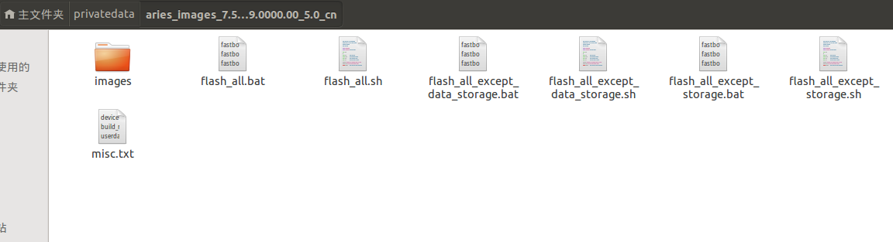

MIUI8 发布已经好一段时间了，一直想体验一下。手头上刚好有一台封尘已久的小米2,小米官网上提供了系统内升级、Recovery升级、线刷三种升级方式。前面两种都是完整的Update包升级，线刷则是通过fastboot个工具把数据刷到各个分区上。官网提供的教程是基于windows的，今天刚好没有带手提过来，公司使用的电脑装的是Ubuntu系统。正好可以试下直接在Ubuntu下使用fastboot工具刷机。
直接在终端输入：sudo apt-get install android-tools-fastboot
将升级包解压到指定目录下

手机进入Recovery模式
长按音量下+电源键进入，然后通过USB连接上电脑。连接到电脑后使用以下命令查看手机的串口标识符：sudo fastboot devices
注意此命令需要管理员权限，必须加sudo。这里的手机串口标识为：979341e0。
通过fastboot刷机
使用编辑工具打开flash_all.sh文件，可以看到下面fastboot命令集合
其中$* 是指定的设置串号标识符号，上面已经通过命令查出来了。 dirname $0是上面解压升级包的所在目录。为了简短目录长度我们先进入images目录，则对应的命令如下:sudo fastboot -s 979341e0 flash partition gpt_both0.binsudo fastboot -s 979341e0 flash tz tz.mbnsudo fastboot -s 979341e0 flash sbl1 sbl1.mbnsudo fastboot -s 979341e0 flash sbl2 sbl2.mbnsudo fastboot -s 979341e0 flash sbl3 sbl3.mbnsudo fastboot -s 979341e0 flash rpm rpm.mbnsudo fastboot -s 979341e0 flash aboot emmc_appsboot.mbnsudo fastboot -s 979341e0 reboot-bootloadersudo fastboot -s 979341e0 erase bootsudo fastboot -s 979341e0 flash misc misc.imgsudo fastboot -s 979341e0 flash modem NON-HLOS.binsudo fastboot -s 979341e0 flash system system.imgsudo fastboot -s 979341e0 flash cache cache.imgsudo fastboot -s 979341e0 flash userdata userdata.imgsudo fastboot -s 979341e0 flash recovery recovery.imgsudo fastboot -s 979341e0 flash boot boot.imgsudo fastboot -s 979341e0 reboot
接着在终端中输入对应命令即可: